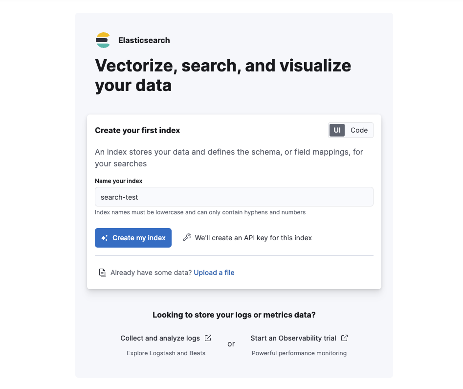

Get started
edit[preview] This functionality is in technical preview and may be changed or removed in a future release. Elastic will work to fix any issues, but features in technical preview are not subject to the support SLA of official GA features.
On this page, you will learn how to:
- Create an Elasticsearch Serverless project.
-
Get started with Elasticsearch:
- Option 1: Guided index flow: Follow the step-by-step tutorial provided in the UI to create an index and ingest data.
- Option 2: In-product Getting Started guide: Use the Getting Started page’s instructions to ingest data and perform your first search.
- Option 3: Explore on your own: If you’re already familiar with Elasticsearch, retrieve your connection details, select an ingest method that suits your needs, and start searching.
Create an Elasticsearch Serverless project
editUse your Elastic Cloud account to create a fully-managed Elasticsearch project:
- Navigate to cloud.elastic.co and create a new account or log in to your existing account.
- Within Serverless Projects, choose Create project.
- Choose the Elasticsearch project type.
-
Select a configuration for your project, based on your use case.
- General purpose: For general search use cases across various data types.
- Optimized for Vectors: For search use cases using vectors and near real-time retrieval.
- Provide a name for the project and optionally edit the project settings, such as the cloud platform region. Select Create project to continue.
- Once the project is ready, select Continue.
Learn how billing works for your project in Elasticsearch billing dimensions.
Now your project is ready to start creating indices, adding data, and performing searches. You can choose one of the following options to proceed.
Option 1: Follow the guided index flow
editOnce your project is set up, you’ll be directed to a page where you can create your first index. An index is where documents are stored and organized, making it possible to search and retrieve data.
- Enter a name for your index.
-
Click Create my index. You can also create the index by clicking on Code to view and run code through the command line.
 -
You’ll be directed to the Index Management page. Here, copy and save the following:
- Elasticsearch URL
- API key
You won’t be able to view this API key again. If needed, refer to Create a new API key to generate a new one.
The UI provides ready-to-use code examples for ingesting data via the REST API. Choose your preferred tool for making these requests:
- Console in your project’s UI
- Python
- JavaScript
- cURL
Option 2: Follow the Getting Started guide
editTo get started using the in-product tutorial, navigate to the Getting Started page and follow the on-screen steps.

Option 3: Explore on your own
editIf you’re already familiar with Elasticsearch, you can jump right into setting up a connection and ingesting data as per your needs.
- Retrieve your connection details.
-
Ingest your data. Elasticsearch provides several methods for ingesting data:
Next steps
edit- Once you’ve added data to your Elasticsearch Serverless project, you can use Playground to test and tweak Elasticsearch queries and chat with your data, using GenAI.
- You can also try our hands-on quick start tutorials in the core Elasticsearch documentation.